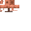
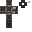
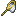

Caderno de Campo • Sobrevivência Eslava
FALE EM RUSSO
OU PERCA SEUS
RECURSOS.
Sobrevivência cooperativa no Minecraft controlada por voz. Pronuncie o vocabulário em russo antes do temporizador zerar. Reconhecimento neural 100% offline via Kaldi/Vosk.
Base
Fabric 1.20.1
Voz
Vosk Offline
Ambiente
Java 17 Incluso
Curadoria
43 Mods
★ 1/5 FIXAÇÃO NOVICE
[12.0s]
Мне нужно дерево!
[Mnye nuzhno dye-rye-va!]
"Preciso de madeira!"
[OK] Aprovado: 98% • +20 Pontos Coop • Item Preservado!
 16
16
8
3

1
1
1
Engenharia do Jogo
Como a Voz Controla sua Sobrevivência
01
Mecânica Melty
Temporizador de Inventário
[+] Aprovação Fonética (≥ 90%)
Item protegido • +20 Pontos de Maestria • Avanço de Estrela
[-] Rejeição ou Tempo Esgotado
Item destruído pelo servidor (DROP/MELT) • Penalidade aplicada
02
100% Offline
Motor Neural Vosk Kaldi
03
Repetição Espaçada
Curva de Ebbinghaus
04
Zero Instalação
Distribuição Portátil 1-Clique
Roleta Radial Tática [V]
V
Мне нужно дерево!
[Mnye nuzhno dye-rye-va!]
Pedir Comida
Socorro
Chão é Lava
Siga-me
Olhe Lá
Laboratório Fonético
Pronúncias Nativas
Мне нужно дерево!
[Mnye nuzhno dye-rye-va!]
"Preciso de madeira!"
Мне нужна еда!
[Mnye nuzhna ye-da!]
"Preciso de comida!"
Помоги мне!
[Po-mo-gi mnye!]
"Me ajude! / Socorro!"
Пол - это лава!
[Pol - e-to la-va!]
"O chão é lava!"
Следуй за мной!
[Sle-duy za mnoy!]
"Siga-me!"
Смотри туда!
[Smo-tri tu-da!]
"Olhe para lá!"
Transparência & Open-Source
Créditos aos Criadores dos Mods
| Mod & Identificador | Categoria | Autor(es) | Licença | Finalidade / Descrição | Link |
|---|
Evolução do Projeto
Histórico de Alterações
Rodada 3
Novembro 2026
Tradução Total, Fonética Nativa & Distribuição Portátil
Referência Fonética Auditiva (Tecla 'H')
Áudio nativo indexado em cache offline. Pressionar H reproduz a pronúncia correta pausando o temporizador do desafio.
Empacotamento Portátil Turnkey
OpenJDK 17 64-bit embarcado, zero dependências no Windows do parceiro, script
Jogar.bat e utilitário Mudar_Nome.bat.Cobertura Estrita de Frases & Anti-Sobreposição
Correção do Scorer para exigir cobertura completa da frase russa e protocolo
coop_busy blindando o menu V contra desafios de itens.Prevenção de Colisão de Nomes LAN
Geração de apelidos randômicos exclusivos (ex:
Estudante_NLQ4) no pacote do instalador, garantindo que a compilação dos demais jogadores não entre em conflito de rede com o jogador anfitrião (Host).
Rodada 2
Novembro 2026
Modo Cooperativo, Roleta Radial & Imersão
Roleta Radial Tática (Tecla 'V')
6 setores angulares com matemática trigonométrica em tempo real para sincronização de pedidos e alertas no HUD dos aliados.
Fauna da Vida Real & Vilas Rústicas
Integração de lontras, furões, libélulas (Critters & Ecologics), vilas históricas (Towns and Towers) e câmera Exposure.
Busca Dinâmica de Qualquer Item
Tela de pesquisa sem pausa de jogo conectada ao setor 0 da roleta com busca bilíngue (russo, português e ID técnico).
Packet Fixer & Estabilidade Netty
Timeout Netty estendido para 180s e buffers NBT ampliados para eliminar quedas de socket TCP em partidas via tunelamento LAN.
Rodada 1
Outubro 2026
Fundação Russa, Vosk Neural & Mecânica Melty
Integração do Motor Vosk Offline
Modelo neural Kaldi
vosk-model-small-ru-0.22 embutido localmente em Java/JNI para transcrição fonética em tempo real.Mecânica Melty & Penalidade de Itens
Desafios de fala ao adquirir itens novos. Perda cirúrgica de itens expirados por temporizadores adaptativos baseados em tiers.
Curva de Ebbinghaus & Spaced Repetition
Algoritmo de decaimento temporal e fixação de 1 a 5 estrelas rastreadas persistentemente por UUID offline.
Currículo Heracles de 73 Missões
Missões estruturadas em 4 tiers de aprendizado conectadas ao desbloqueio gradual de caracteres do alfabeto cirílico.
Passo a Passo Rápido
Como Jogar no Modo Cooperativo
1
Baixe o Pacote
Baixe o arquivo Minecraft_Russo_Client_Setup.zip abaixo e extraia em qualquer pasta do computador.
2
Inicie no Jogar.bat
Dê dois cliques em Jogar.bat. O Java 17 embutido inicia o jogo diretamente sem configurar nada.
3
Troque o Apelido
Dê dois cliques em Mudar_Nome.bat para escolher seu nick sem conflito em partidas LAN.
Instalação 1-Clique
Baixar Pacote Completo do Cliente
Baixar Cliente Portátil (.zip) — 1.11 GB
Checksum Oficial de Integridade (SHA-256):
7dacabded7f319811a467e3085d8d80db2da6b8be7d240a10ed9506a78c4c347